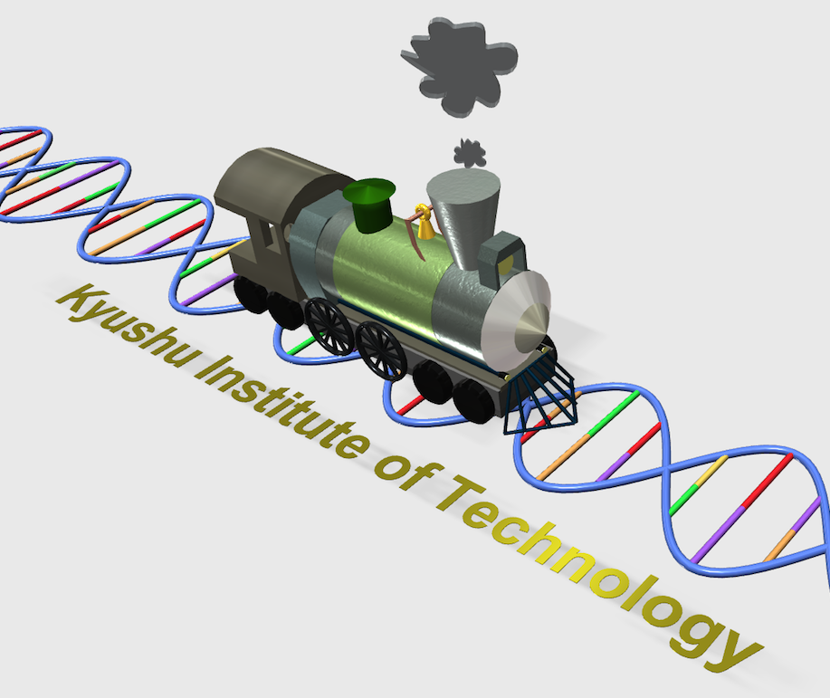
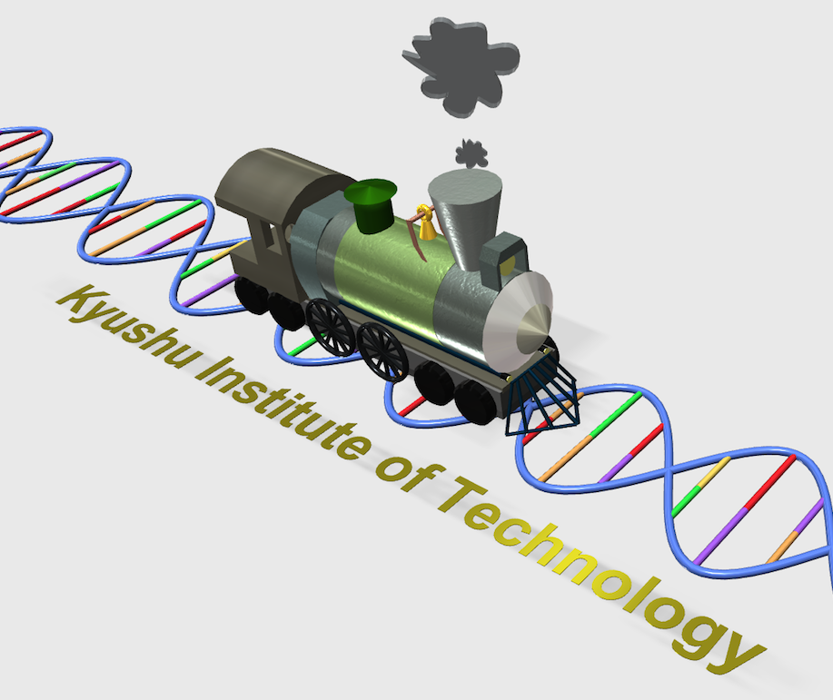

Supplements : Spin-off study
Application to a mechatronics system learning from the control method for a biochemical reaction system: Is our control method available for a real mechatronics system?
In this supplementary section, we shall perform a free investigation with our method! During our project, we were just curious about “is our method available for a real mechatronics system?”. Here, we show an exciting results with a Lego Mindstorms NXT (Fig. S1).

Fig.S1 Lego Mindstorms NXT.
1. Motivation and objective
Our control method that we show in the “Theory” section is called an integral feedback controller in the control engineering. However, the mechanism to regulate a target state seems to be quite different from that in a mechatronics system (Fig. S2). Here, we try to perform a velocity control of the Mindstorm NXT by using the integral feedback for a biochemical reaction system. In other words without fear of misunderstanding, our investigation is to control a mechanical hardware with a biochemical-like brain.
Fig.S2 Two strategies of integral control (left, for biochemical reaction system; right, for mechatronics system).
2. Experimental design
In Fig. S2, the target concentration to be regulated is x4 after the membrane. In the Mindstorms experiment, the states x2 and x4 corresponds to the forward Mindstorm and the towed Mindstorm, respectively. The connection between the two Mindstorms is realized by a mechanical damper (Fig. S3). Then, we design the whole system to regulate the velocity of the towed Mindstorm as shown in Fig. S4. We omit the detailed discussion about the experimental setup and validity although we spent much time to make the system. But, if you have more interest, please contact us.
Fig. S3 Two Mindstorms connected with a damper.
Fig. S4 A realization of a velocity control of the Mindstorm by using our method for a biochemical reaction system.
3. Experimental results
For the sake of simplicity of our mechatronics experiments, we replaced a mechanical damper by a virtual damper of which force effect is calculated in a microprocessor, and added as a compensate torque to the motors in both Mindstorms (Fig. S5). Fig. S6 and the movies shows the experimental results in which (A) a typical integral feedback that is ordinary used for a mechatronics system and (B) a bio-type integral feedback that is based on our method are examined. It is no surprise to successfully work the regulation of the velocity to a target level in Fig. 6 (left), however, it is surprising to do so in Fig. 6 (right)! We conclude that our method is valid for a mechatronics system!